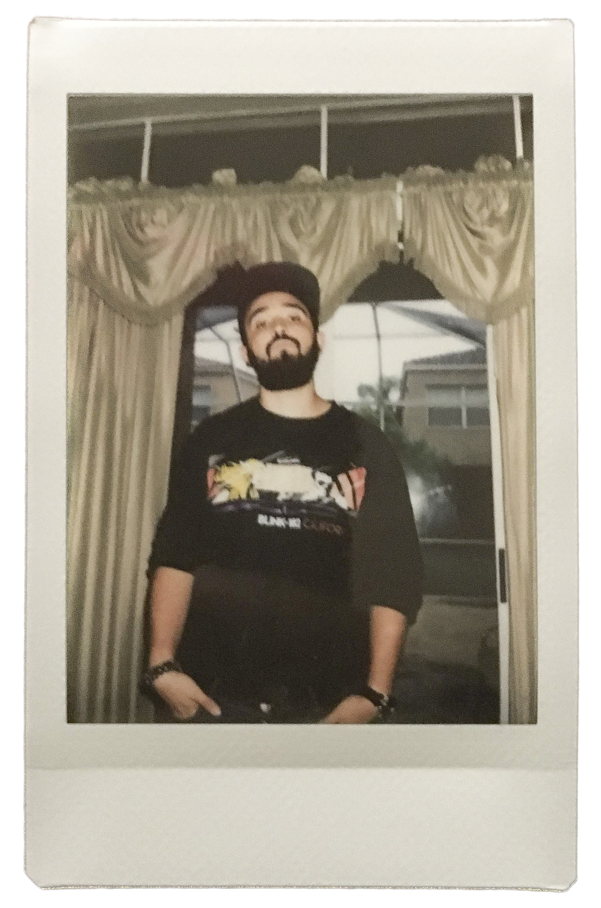

<div class="text-block">
	<div class="row align-items-right">
		<div class="col text-right">
      <!DOCTYPE html>
<html>
<head>
<meta name="viewport" content="width=device-width, initial-scale=1">
<style>
body {
  font-family: Arial, Helvetica, sans-serif;
  margin: 0;
}

html {
  box-sizing: border-box;
}

*, *:before, *:after {
  box-sizing: inherit;
}

.column {
  float: left;
  width: 100%;
  margin-bottom: 16px;
  padding: 0 8px;
}

.card {  
  margin: 8px;
}
.card2 {
  margin: 8px;
}

.about-section {
  padding: 50px;
  text-align: center;
  background-color: #474e5d;
  color: white;
}

.container {
  padding: 0 16px;
}

.container::after, .row::after {
  content: "";
  clear: both;
  display: table;
}

.title {
  color: grey;
}

.button {
  border: none;
  outline: 0;
  display: inline-block;
  padding: 8px;
  color: white;
  background-color: #000;
  text-align: center;
  cursor: pointer;
  width: 100%;
}

@media screen and (max-width: 650px) {
  .column {
    width: 100%;
    display: block;
  }
}
</style>
</head>
<body>


<h2 style="text-align:center">About El Papi </h2>
<div class="row">
  <div class="column">
    <div class="card">
      
      <div class="container">
		 <h2> Chisco Valdés</h2>
        <p class="title">Frustred Punk and Visual Artist</p>
        <p style="text-align:justify">I'm an audiovisual artist from Guatemala currently based in 		Santander, Spain. 
        <br>
        <br>
        I'm interested in issues that revolve around my Latino identity. Often but not only: social contrasts, imposed religion, and faulty bureaucracy. I have a strange love-hate relationship with my home-country-Guatemala, and so I left to find some answers. I was always attracted to North American culture, especially movies and pop-punk-skate. That motivated me to play with both still and moving images to deepen these concerns.

		At first, I started experimenting with mise-en-scène to arise images that make me connect with the topics that bothered me. It wasn't enough, so I moved to document those contradictions and subjects that surprised me, but I was afraid to get too close. And I felt that I have to suffer it in my flesh to understand it better. So, my latest exercises attempt to go as close as possible, creating conditions that allow me to experiment with all my mind and senses.</p>
        <h2>Contact</h2>
        <p class="title">Enquiries, commissions, sales and, insults at:</p>
        <p>hello@callmepapi.art</p>
      </div>
    </div>
  </div>

  <div class="column">
    <div class="card2">
      <div class="container">
        <h2> Selected Press and Acolades </h2>
        	<a href="https://lahora.gt/chisco-valdes-obtiene-el-premio-unico-para-exponer-su-obra-en-una-valla-publicitaria/">Winner Republica, Open Call, La Nueva Fabrica 2021</a>
				<br>
				<br>
				<a href="https://www.phe.es/2021/09/07/ya-conocemos-a-los-seleccionados-en-el-visionado-de-porfolios-de-santander-para-participar-en-descubrimientos-phe22/">PhotoESPAÑA DISCOVERIES 2022</a>
				<br>
				<br>
				<a href="https://www.fresheyesphoto.com/talents-2021">FRESH EYES 2021 TALENT</a>
				<br>
				<br>
				<a href="https://www.fotodemic.org/diaries/alien">FOTODEMIC</a>
				<br>
				<br>
				<a href="https://www.broad.community/blog/2020/12/3/francisco-valdes-alien">BROADMAGAZINE</a>
				<br>
				<br>
				<a href="https://www.indieshortsmag.com/reviews/2019/03/verte-teaches-you-to-think-twice-before-you-upload-your-next-picture-to-the-instagram/">INDIESHORTS MAGAZINE </a>
				<br>
				<br>
				<a href="http://www.feelsales.com/en/catalogo-completo/18639/see-you"> IN SIGHT SHORTFILM </a>
				<a href="https://www.20fotografos.com/aplicaciones-estudiantes"> Selected 20  </a>
				<br>
				<br>
      </div>
    </div>
  </div>
  <div>
  
      </div>
    </div>

</body>
</html>


		</div>
	</div>
</div>	